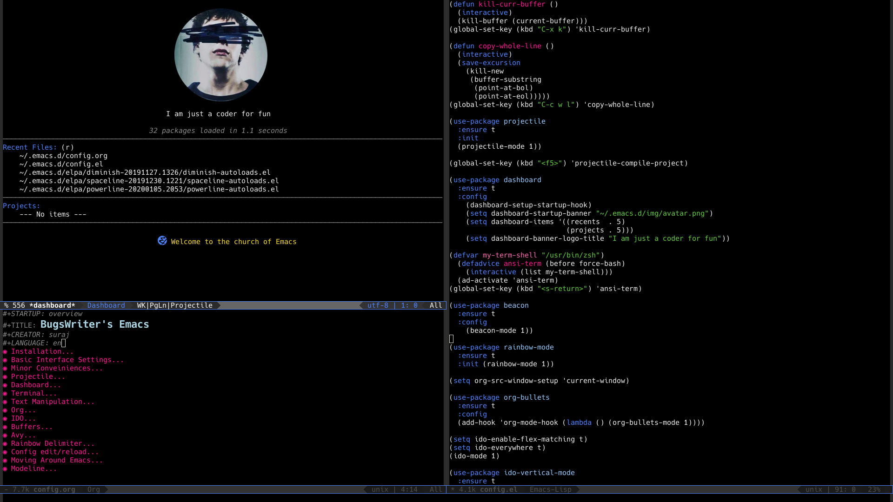

Archmacs Config
Table of Contents
- 1. Installation
- 2. Dependencies
- 3. Appearance
- 4. Basic Interface Settings
- 5. Window Manager
- 6. Terminal
- 7. Dashboard
- 8. Modeline
- 9. Minor Conveiniences
- 10. Kill ring
- 11. Git integration
- 12. Sudo edit
- 13. Org
- 14. Buffers
- 15. Projectile
- 16. Which Key
- 17. Text Manipulation
- 18. Telega
- 19. IDO
- 20. Buffers
- 21. Avy
- 22. Config edit/reload
- 23. Moving Around Emacs
- 24. Auto Completion
- 25. Swiper
- 26. Clock
- 27. Music
- 28. Symon
- 29. EMMS
- 30. Dired Launch
1 Installation

git clone https://github.com/bugswriter/ArchMacs.git ~/.emacs.d
Don't forget to remove your own ~/.emacs and your ~/.emacs.d prior
to cloning this configuration. After cloning next time when you launch
emacs you it's will take some time to collect all packages, you may also
encounter some warnings and errors which are safe to ignore as long as
you relaunch emacs and see none.
The configuration is written in org mode, which means it's self documented. So you should try reading, understanding and tweaking according to your liking.
2 Dependencies
Many melpa packages in this configurationn depends on Arch Linux packages too. Some of these packages exist in main repo and for some packages you have to use AUR. If you are not on Arch or any Arch based distro. I am pretty sure you will find these packages for your distro too.
Here is a nice table to display all required packages.
| Package | Purpose? |
|---|---|
| xorg-server | obvious reasons |
| amixer | control sound volume |
| brightnessctl | change brightness |
| scrot | taking screenshots |
| TLP | wifi and bluetooth |
| slock | screenlock |
| upower | keyboard backlight |
| mpd | listening songs |
3 Appearance
My Archmacs have killer looks. The code of this section is responsible for it.
3.1 Theme
When my crush rejected me by saying you are ugly. I learned that looks matter alot.
My emacs will not be ugly like me and no one will dump my config for this.
So I decided to use doom-themes. You can change doom-themes to any other theme.
(use-package doom-themes :if window-system :ensure t :config (load-theme 'doom-molokai t) (doom-themes-org-config) (doom-themes-visual-bell-config) (menu-bar-mode -1) (tool-bar-mode -1) (fringe-mode -1) (scroll-bar-mode -1))
3.2 Font
Just like with power comes great responsibility, with great theme comes great font.
Here I use JetBrains Mono Which is similar to fira. Feel free to change if you
have shitty taste.
(add-to-list 'default-frame-alist
'(font . "JetBrains Mono-14"))
4 Basic Interface Settings
These are settings that do not depend on packages and built-in enchancements to the UI.
4.1 Looks
4.1.1 Remove lame startup screen
We use an actual replacement for it, keep reading or head directly to dashboard
(setq inhibit-startup-message t)
4.1.2 Disable menus and scrollbars
If you like using any of those, change -1 to 1.
(tool-bar-mode -1) (menu-bar-mode -1) (scroll-bar-mode -1)
4.1.3 Disable bell
This is annoying, remove this line if you like being visually reminded of events.
(setq ring-bell-function 'ignore)
4.1.4 Set UTF-8 encoding
(setq locale-coding-system 'utf-8)
(set-terminal-coding-system 'utf-8)
(set-keyboard-coding-system 'utf-8)
(set-selection-coding-system 'utf-8)
(prefer-coding-system 'utf-8)
4.2 Functionality
4.2.1 Disable backups and auto-saves
I don't use either, you might want to turn those from nil to t if you do.
(setq make-backup-files nil) (setq auto-save-default nil)
4.2.2 Change yes-or-no questions into y-or-n questions
(defalias 'yes-or-no-p 'y-or-n-p)
4.2.3 Async
Lets us use asynchronous processes whereever possible, pretty useful.
(use-package async :ensure t :init (dired-async-mode 1))
4.3 Cool Icons
(use-package all-the-icons :ensure t :init) (use-package all-the-icons-dired :ensure t :init (add-hook 'dired-mode-hook 'all-the-icons-dired-mode)) (use-package all-the-icons-ibuffer :ensure t :init (all-the-icons-ibuffer-mode 1))
4.4 Async
(use-package async :ensure t :init (dired-async-mode 1))
5 Window Manager
Yes, emacs can work as a window manager. You can run browsers, media players, games, vim… everything inside emacs. Because emacs can work as window manager. This made my life 10x easier. Archmacs don't need any desktop environment, you can just use emacs to operate your computer.
5.1 EXWM
EXWM is one of the most popular emacs package. EXWM is a window manager. With the help of this package we can easily run any program inside emacs as a emacs buffer. Which is very cool.
(use-package exwm :ensure t :config (require 'exwm-config) (fringe-mode 3) (server-start) (exwm-config-ido) (setq exwm-workspace-number 1) (exwm-input-set-key (kbd "s-r") #'exwm-reset) (exwm-input-set-key (kbd "s-k") #'exwm-workspace-delete) (exwm-input-set-key (kbd "s-w") #'exwm-workspace-swap) (dotimes (i 10) (exwm-input-set-key (kbd (format "s-%d" i)) `(lambda () (interactive) (exwm-workspace-switch-create ,i) (message "Workspace %d", i)))) (exwm-input-set-key (kbd "s-&") (lambda (command) (interactive (list (read-shell-command "$ "))) (start-process-shell-command command nil command))) (exwm-enable))
5.2 Desktop Environment
This little package single handedly handle lot of small functionality which we need to use emacs as a deskto environment. Here is the list of things this package will take care of -
- Controling sound volume with volume key (inc,dec,mute)
- Controling brightness with brightness key (inc/dec)
- Taking Screenshot with print screen key
- Handles wifi and bluetooth.
- Handle lockscreen.
I recommend you to read more about this package functionality on - It's Github
(use-package desktop-environment :ensure t :init (desktop-environment-mode 1))
5.3 Dmenu
Now since we can open any program inside emacs, we also need a menu to search and start
any application. For this we can use dmenu. Dmenu is suckless utility. But here we
using a melpa package of dmenu which allow dmenu inside emacs. Inside emacs using dmenu
for finding programs is pretty quick. I have bind s-SPC to open dmenu which make
it more quicker.
(use-package dmenu :ensure t :bind ("s-SPC" . 'dmenu))
6 Terminal
Not having a cool terminal inside your text editor is a crime, exactly like saying Archmacs text editor which I just did.
6.1 Vterm
Many emacs users including me like vterm. It's more solid and polished. I bind s-return
to open terminal because I know you always want terminal ASAP.
(use-package vterm :ensure t :init (global-set-key (kbd "<s-return>") 'vterm))
7 Dashboard
This is your new startup screen, together with projectile it works in unison and provides you with a quick look into you latest projects and files. Change the welcome message to whatever string you want and change the numbers to suit you liking, I find 5 to be enough. I also added my image and a cool line from show one punch man, you may want to change that.
(use-package dashboard :ensure t :config (dashboard-setup-startup-hook) (setq dashboard-startup-banner "~/.emacs.d/img/avatar.png") (setq dashboard-items '((recents . 5) (projects . 5))) (setq dashboard-banner-logo-title "I am just a coder for fun"))
8 Modeline
The modeline is the heart of emacs, it displays information about modes and states you are in.
8.1 Spaceline
Spaceline is a mode-line theme for spacemacs. It's is simple and looks good.
(use-package spaceline :ensure t :config (require 'spaceline-config) (setq powerline-default-separator (quote arrow)) (spaceline-spacemacs-theme))
8.2 Diminish Modes
By default there is alot of garbage information about many minor modes in modeline which we
don't want to display. Diminish is a package which allow us to remove those.
(use-package diminish :ensure t :init (diminish 'which-key-mode) (diminish 'linum-relative-mode) (diminish 'hungry-delete-mode) (diminish 'visual-line-mode) (diminish 'subword-mode) (diminish 'beacon-mode) (diminish 'irony-mode) (diminish 'page-break-lines-mode) (diminish 'auto-revert-mode) (diminish 'rainbow-delimiters-mode) (diminish 'rainbow-mode) (diminish 'yas-minor-mode) (diminish 'flycheck-mode) (diminish 'helm-mode))
8.3 System load
By default emacs show system load information which is completely useless to me. So It's better to remove it.
(setq display-time-default-load-average nil)
8.4 Fancy Battery
fancy-battery is a melpa package to display battery information at modeline. So yeah in
Archmacs you can see battery status inside emacs easily. It's also have lot of fancy way to
warn about low battery and all the other stuff.
(use-package fancy-battery :ensure t :init (fancy-battery-mode 1) (setq fancy-battery-show-percentage t))
9 Minor Conveiniences
Emacs is at it's best when it just does things for you, shows you the way, guides you so to speak. This can be best achieved using a number of small extensions. While on their own they might not be particularly impressive.
9.1 Visiting the configuration
Since this config is like a complete doc, it's better to bind a key to open it.
I bind C-c e to quickly open ~/.emacs.d/config.org.
(defun config-visit () (interactive) (find-file "~/.emacs.d/config.org")) (global-set-key (kbd "C-c e") 'config-visit)
9.2 Reloading the configuration
Closing and opening emacs again after some quick changes in config is pain, especially when
you are using emacs as a window manager. So here I bind a key C-c r to do it quickly without
closing emacs.
(defun config-reload () (interactive) (org-babel-load-file (expand-file-name "~/.emacs.d/config.org"))) (global-set-key (kbd "C-c r") 'config-reload)
9.3 Subwords
Subword will remaps word-based editing commands to subword-based commands that handle symbols with mixed uppercase and lowercase letters.
(global-subword-mode 1)
9.4 Electric pair mode
Electric Pair mode, a global minor mode, provides a way to easily insert matching delimiters: parentheses, braces, brackets, etc.
(setq electric-pair-pairs '(
(?\{ . ?\})
(?\( . ?\))
(?\[ . ?\])
(?\" . ?\")
))
(electric-pair-mode t)
9.5 Kill whole word
This is a function which allow you to delete a complete word with one keybind. My keybind
for deleting a word is C-c w w. I wish emacs have this feature by default.
(defun kill-whole-word () (interactive) (backward-word) (kill-word 1)) (global-set-key (kbd "C-c w w") 'kill-whole-word)
9.6 Hungry delete
I hate pressing backspace and waiting for deleting whitespaces. This package hungry-delete
delete all whitespaces with just one click on backspace.
(use-package hungry-delete :ensure t :config (global-hungry-delete-mode))
9.7 Copy whole line
Emacs by default don't have any function which copy the whole line. But gladly emacs gave us
power to write our own functions. So I write my own and bind it to C-c w l.
(defun copy-whole-line () (interactive) (save-excursion (kill-new (buffer-substring (point-at-bol) (point-at-eol))))) (global-set-key (kbd "C-c w l") 'copy-whole-line)
9.8 Beacon
While changing buffers or workspaces, the first thing you do is look for you cursor. Unless you know its position, you can not move it efficiently. Every time you change buffers, the current position of your cursor will be briefly highlighted now.
(use-package beacon :ensure t :config (beacon-mode 1))
9.9 Rainbow
Mostly useful if you are into web development or game development. Every time emacs encounters a hexadeimal code that resembles a color, it will automatically highlight it in the appropriate color. This is a lot cooler than you may think.
(use-package rainbow-mode :ensure t :init (add-hook 'prog-mode-hook 'rainbow-mode))
9.10 Rainbow Delimiter
Colors parentheses and other delimiters depending on their depth, useful for any language using them, especially lisp.
(use-package rainbow-delimiters :ensure t :init (rainbow-delimiters-mode 1))
9.11 Expand region
A pretty simple package, takes your cursor and sementically expands the region, so words, sentencies, maybe the contents of some parentheses, it's awesome, try it out.
(use-package expand-region :ensure t :bind ("C-q" . er/expand-region))
9.12 Zapping to char
A nifty little package that kills all text between your cursor and a selected character. A lot
more useful than you might think. If you with to include the selected character in the killed
region, change zzz-up-to-char into zzz-to-char.
(use-package zzz-to-char :ensure t :bind ("M-z" . zzz-up-to-char))
10 Kill ring
There is lot of cutomization to the kill ring, and while I have not used it much before, I decided that it was time to change that.
10.1 Maximum entried on the ring
The default is 60, I personally need more sometimes.
(setq kill-ring-max 100)
10.2 popup-kill-ring
Out of all the packages I tried out, this one being the simplest, appealed to me most. With a simple M-y you can now browse your kill-ring like browsing autocompletion items. C-n and C-p totally work for this.
(use-package popup-kill-ring :ensure t :bind ("M-y" . popup-kill-ring))
11 Git integration
Countless are the times where I opened vterm and use git on something. These times are also
something that I'd prefer stay in the past, since magit is great. It's easy and intuitive to
use, shows its options at a keypress and much more.
11.1 Magit
magit is a amazing melpa package which allow me to use git within emacs more better way.
(use-package magit :ensure t :config (setq magit-push-always-verify nil) (setq git-commit-summary-max-length 50) :bind ("M-g" . magit-status))
12 Sudo edit
Opening nano to edit files which require root permission is pain in the butt. This package
sudo-edit allow us to edit files which require root permission with emacs.
(use-package sudo-edit :ensure t :bind ("s-e" . sudo-edit))
13 Org
One of the absolute greatest features of emacs is called “org-mode”. This very file has been written in org-mode, a lot of other configurations are written in org-mode, same goes for academic papers, presentations, schedules, blogposts and guides. Org-mode is one of the most complex things ever, lets make it a bit more usable with some basic configuration.
Those are all rather self-explanatory.
13.1 Common Settings
These are just some common settings which makes working in org mode more better.
(setq org-ellipsis " ") (setq org-src-fontify-natively t) (setq org-src-tab-acts-natively t) (setq org-confirm-babel-evaluate nil) (setq org-export-with-smart-quotes t) (setq org-src-window-setup 'current-window) (add-hook 'org-mode-hook 'org-indent-mode)
13.2 Org Bullets
Pretty bullets to make your org file more pretty and managed.
(use-package org-bullets :ensure t :config (add-hook 'org-mode-hook (lambda () (org-bullets-mode 1))))
14 Buffers
Workflow with emacs depends alot on Buffers. If you know how to quickly change and manage buffers, you are not a novice in emacs. Sadly by default emacs have some bad way to manage buffers. Here I tried to encounter those issues.
14.0.1 Always murder current buffer
Doing C-x k should kill the current buffer at all times.
(defun kill-curr-buffer () (interactive) (kill-buffer (current-buffer))) (global-set-key (kbd "C-x k") 'kill-curr-buffer)
14.0.2 Toggle maximize buffer
An Emacs function to temporarily make one buffer fullscreen. You can quickly restore the old window setup.
(defun toggle-maximize-buffer () "Maximize buffer" (interactive) (if (= 1 (length (window-list))) (jump-to-register '_) (progn (set-register '_ (list (current-window-configuration))) (delete-other-windows)))) (global-set-key [(super shift return)] 'toggle-maximize-buffer)
15 Projectile
Projectile is an awesome project manager, mostly because it recognized directories with .git
directory as projects and helps you manage them accordingly.
15.1 Enable projectile globally
This makes sure that everything can be a project.
(use-package projectile :ensure t :init (projectile-mode 1))
15.2 Let projectile call make
(global-set-key (kbd "<f5>") 'projectile-compile-project)
16 Which Key
(use-package which-key :ensure t :init (which-key-mode))
17 Text Manipulation
18 Telega
Telega is an amazing telegram client inside emacs. I use this very often it contain nearly all tdesktop features, even it's better and obviously more faster to use because .. emacs.
(use-package telega :load-path "~/telega.el" :commands (telega) :defer t :config (setq telega-symbol-folder "📂") :init (telega-notifications-mode 1)) (add-hook 'telega-load-hook 'global-telega-squash-message-mode)
19 IDO
19.1 Enable IDO mode
(setq ido-enable-flex-matching t) (setq ido-everywhere t) (ido-mode 1)
19.2 IDO vertical
(use-package ido-vertical-mode :ensure t :init (ido-vertical-mode 1)) (setq ido-vertical-define-keys 'C-n-and-C-p-only)
19.3 Smex
(use-package smex :ensure t :init (smex-initialize) :bind ("M-x" . smex))
20 Buffers
20.1 Enable ibuffer
(global-set-key (kbd "C-x C-b") 'ibuffer)
20.2 Expert mode
(setq ibuffer-expert t)
20.3 Kill all buffers
(defun kill-all-buffers () (interactive) (mapc 'kill-buffer (buffer-list))) (global-set-key (kbd "C-M-s-k") 'kill-all-buffers)
21 Avy
(use-package avy :ensure t :bind ("C-." . avy-goto-char))
22 Config edit/reload
23 Moving Around Emacs
23.1 Switch Window
(use-package switch-window :ensure t :config (setq switch-window-input-style 'minibuffer) (setq switch-window-increase 4) (setq switch-window-threshold 2) (setq switch-window-shortcut-style 'qwerty) (setq switch-window-qwerty-shortcuts '("a" "s" "d" "f" "h" "j" "k" "l")) :bind ([remap other-window] . switch-window))
23.2 Following window splits
(defun split-and-follow-horizontally () (interactive) (split-window-below) (balance-windows) (other-window 1)) (global-set-key (kbd "C-x 2") 'split-and-follow-horizontally) (defun split-and-follow-vertically () (interactive) (split-window-right) (balance-windows) (other-window 1)) (global-set-key (kbd "C-x 3") 'split-and-follow-vertically)
24 Auto Completion
24.1 Company
(use-package company :ensure t :config (setq company-idle-delay 1) (setq company-minimum-prefix-length 3) :init (company-mode 1)) (with-eval-after-load 'company (define-key company-active-map (kbd "M-n") nil) (define-key company-active-map (kbd "M-p") nil) (define-key company-active-map (kbd "C-n") #'company-select-next) (define-key company-active-map (kbd "C-p") #'company-select-previous) (define-key company-active-map (kbd "SPC") #'company-abort))
25 Swiper
(use-package swiper :ensure t :bind ("C-s" . swiper))
26 Clock
A clock to see time. Because time is important.
26.1 Time Format
(setq display-time-24hr-format t) (setq display-time-format "%H:%M")
26.2 Enabling the mode
(display-time-mode 1)
27 Music
Music in emacs
27.1 EMMS
(use-package emms :ensure t :config (require 'emms-setup) (require 'emms-player-mpd) (emms-all) ; don't change this to values you see on stackoverflow questions if you expect emms to work (setq emms-seek-seconds 5) (setq emms-player-list '(emms-player-mpd)) (setq emms-info-functions '(emms-info-mpd)) (setq emms-player-mpd-server-name "localhost") (setq emms-player-mpd-server-port "6602") :bind ("s-m p" . emms) ("s-m b" . emms-smart-browse) ("s-m r" . emms-player-mpd-update-all-reset-cache) ("<XF86AudioPrev>" . emms-previous) ("<XF86AudioNext>" . emms-next) ("<XF86AudioPlay>" . emms-pause) ("<XF86AudioStop>" . emms-stop))
27.2 MPC
(setq mpc-host "localhost:6602") (defun mpd/start-music-daemon () "Start MPD, connects to it and syncs the metadata cache." (interactive) (shell-command "mpd") (mpd/update-database) (emms-player-mpd-connect) (emms-cache-set-from-mpd-all) (message "MPD Started!")) (global-set-key (kbd "s-m c") 'mpd/start-music-daemon) (defun mpd/kill-music-daemon () "Stops playback and kill the music daemon." (interactive) (emms-stop) (call-process "killall" nil nil nil "mpd") (message "MPD Killed!")) (global-set-key (kbd "s-m k") 'mpd/kill-music-daemon) (defun mpd/update-database () "Updates the MPD database synchronously." (interactive) (call-process "mpc" nil nil nil "update") (message "MPD Database Updated!")) (global-set-key (kbd "s-m u") 'mpd/update-database)
28 Symon
29 EMMS
Music player
(use-package emms :ensure t :config (require 'emms-setup) (require 'emms-player-mpd) (emms-all) ; don't change this to values you see on stackoverflow questions if you expect emms to work (setq emms-seek-seconds 5) (setq emms-player-list '(emms-player-mpd)) (setq emms-info-functions '(emms-info-mpd)) (setq emms-player-mpd-server-name "localhost") (setq emms-player-mpd-server-port "6602") :bind ("s-m p" . emms) ("s-m b" . emms-smart-browse) ("s-m r" . emms-player-mpd-update-all-reset-cache) ("<XF86AudioPrev>" . emms-previous) ("<XF86AudioNext>" . emms-next) ("<XF86AudioPlay>" . emms-pause) ("<XF86AudioStop>" . emms-stop))
MPC
(setq mpc-host "localhost:6602") (defun mpd/start-music-daemon () "Start MPD, connects to it and syncs the metadata cache." (interactive) (shell-command "mpd") (mpd/update-database) (emms-player-mpd-connect) (emms-cache-set-from-mpd-all) (message "MPD Started!")) (global-set-key (kbd "s-m c") 'mpd/start-music-daemon) (defun mpd/kill-music-daemon () "Stops playback and kill the music daemon." (interactive) (emms-stop) (call-process "killall" nil nil nil "mpd") (message "MPD Killed!")) (global-set-key (kbd "s-m k") 'mpd/kill-music-daemon) (defun mpd/update-database () "Updates the MPD database synchronously." (interactive) (call-process "mpc" nil nil nil "update") (message "MPD Database Updated!")) (global-set-key (kbd "s-m u") 'mpd/update-database)
(use-package fancy-battery :ensure t)
30 Dired Launch
(use-package dired-launch :ensure t :init (dired-launch-enable))